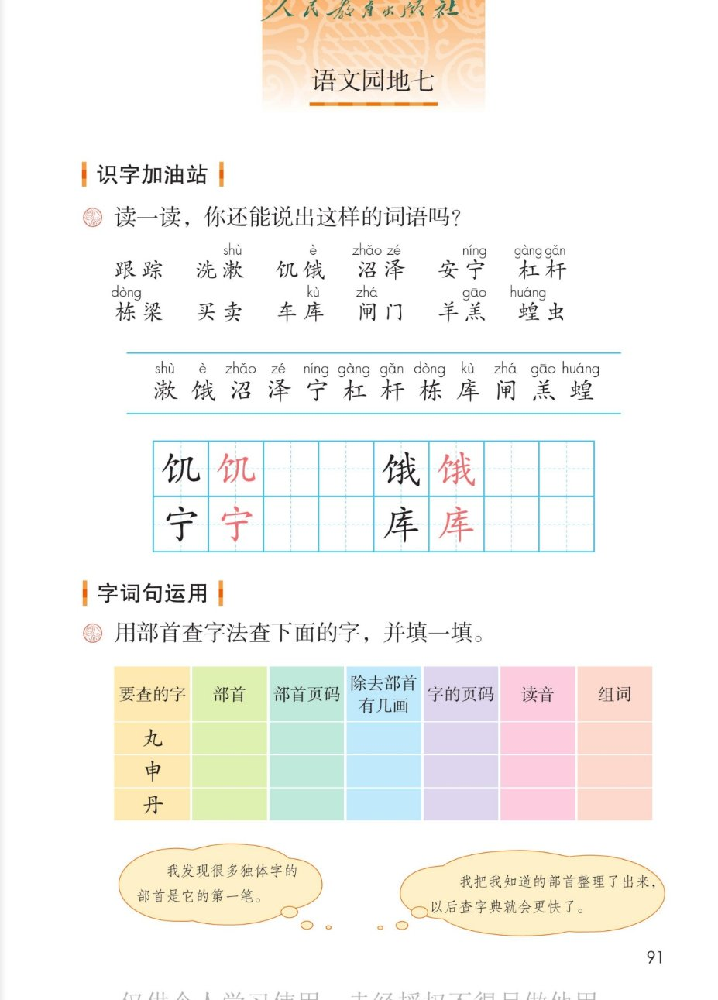
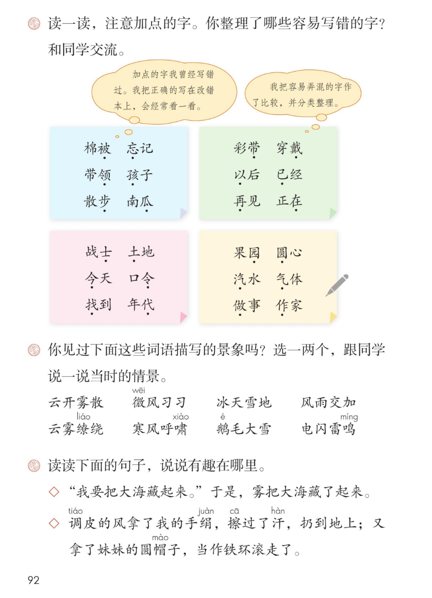
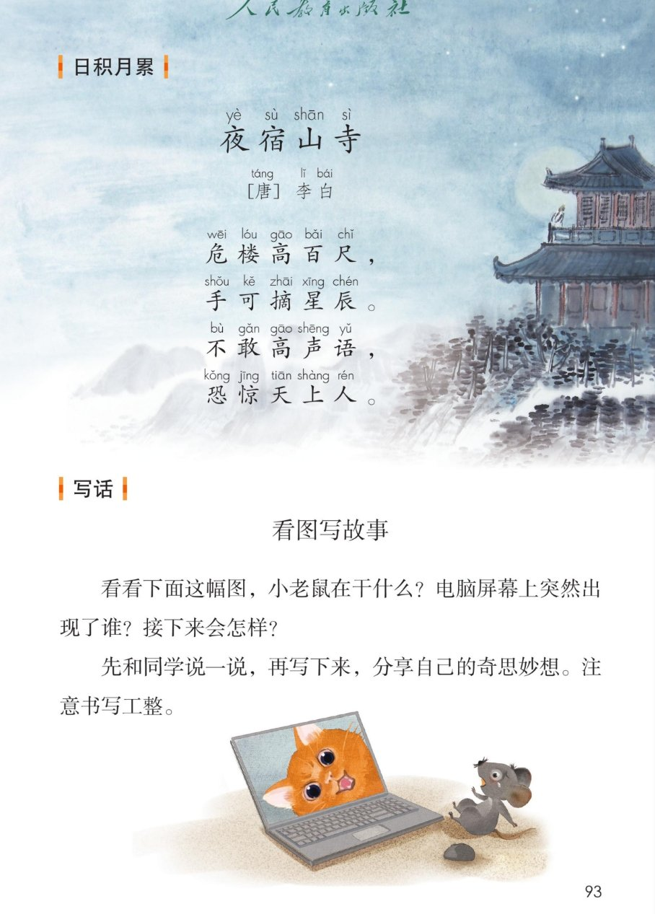
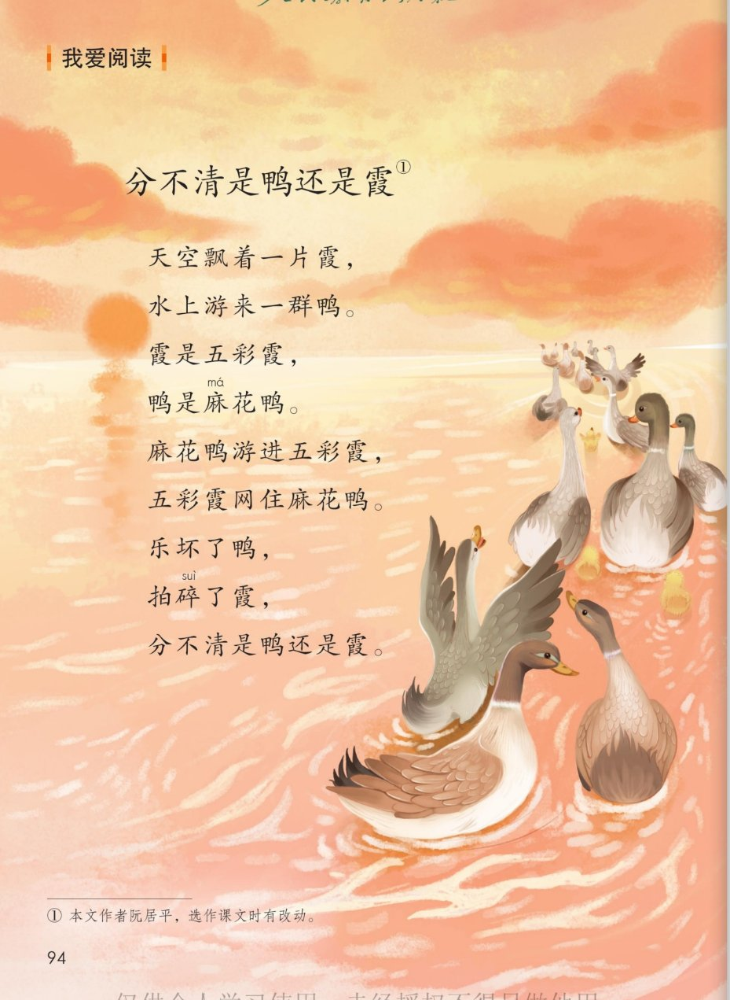

统编版 · 二年级上册 · 第七单元
第七单元 · 单元课件
语文园地七 · 部首查字法 · 易错字 · 天气词语 · 夜宿山寺 · 看图写故事 · 鸭和霞
课本第 91~94 页，点哪句读哪句
要认 12 字
会写 4 字
查字 3 个
易错字 24 个
天气词 8 个
古诗 1 首
儿歌 1 篇
闯关 8 题
这个单元学了什么：古诗二首、雾在哪里、雪孩子——都是让我们展开想象的课文。
语文园地七带大家记一记容易写错的字、用部首查字法查独体字、积累天气词语，
背一背李白站得高的诗，再看图编一个故事，读一首鸭和霞的绕口令儿歌。
点一下任一卡片或句子，就能听。
① 识字加油站 · 读一读
课本第 91 页
读一读，你还能说出这样的词语吗
本页要认的字 · 12 个
按课本生字条原序，点字听读音
② 写字 · 饥 饿 宁 库
课本第 91 页 · 田字格
点卡片听书写要点
③ 字词句运用 · 用部首查字法查下面的字
课本第 91 页
先自己查一查，再点行对答案
课本原题：用部首查字法查下面的字，并填一填。
| 要查的字 | 部首 | 部首页码 | 除去部首
有几画 | 字的页码 | 读音 | 组词（参考） |
页码每本字典不一样，请翻自己的字典填一填；点表格行可以核对部首和笔画。
课本气泡：我发现很多独体字的部首是它的第一笔。
课本气泡：我把我知道的部首整理了出来，以后查字典就会更快了。
老师的话：这三个都是独体字，部首常常就是第一笔：丸→丿，申→丨，丹→丿。（有的字典把"申"收在"田"部，查不到时可以换部首再试。）
④ 读一读，注意加点的字
课本第 92 页
你整理了哪些容易写错的字？和同学交流
课本气泡：加点的字我曾经写错过。我把正确的写在校错本上，会经常看一看。
课本气泡：我把容易弄混的字作了比较，并分类整理。
老师的话：这些加点字都容易写错——步少一点、瓜多一点、令有一点而今没有；
已·以·再·在要分清用法；园·圆、汽·气、做·作要比较着记。
⑤ 你见过这些词语描写的景象吗
课本第 92 页
选一两个，跟同学说一说当时的情景
读读下面的句子，说说有趣在哪里
这两句都来自本单元的课文
◇“我要把大海藏起来。”于是，雾把大海藏了起来。
◇调皮的风拿了我的手绢，擦过了汗，扔到地上；又拿了妹妹的圆帽子，当作铁环滚走了。
老师的话：雾和风被当作人来写——会说话、会拿东西，句子一下子就活了。像这样写，你的写话也能变生动。
⑥ 日积月累 · 夜宿山寺
课本第 93 页
点哪句读哪句
夜宿山寺[唐] 李白
危楼高百尺，
手可摘星辰。
不敢高声语，
恐惊天上人。
小知识（老师的话）：“危楼”就是很高的楼。诗人说站在这座楼上，一伸手就能摘到星星；
不敢大声说话，怕惊动天上的仙人。——你看，李白把楼写得多高、多有趣！
⑦ 写话 · 看图写故事
课本第 93 页
先说一说，再写下来
课本原题：看看下面这幅图，小老鼠在干什么？电脑屏幕上突然出现了谁？接下来会怎样？
先和同学说一说，再写下来，分享自己的奇思妙想。注意书写工整。
1
小老鼠在干什么？
看它的表情和动作，猜猜它遇到了什么。
2
屏幕上出现了谁？
它是怎么出现的？小老鼠看见后是什么样子？
3
接下来会怎样？
大胆想象，把故事编下去，结果由你决定。
🐭💻◇ 图上：小老鼠正盯着电脑屏幕看。
🐱😱◇ 屏幕上突然出现了一只猫……接下来会发生什么？
老师的话：写的时候用上突然、吓得、连忙这样的词，故事会更精彩；写完读一读，看句子通不通顺。
⑧ 我爱阅读 · 分不清是鸭还是霞
课本第 94 页
读起来像绕口令，试试越读越顺
分不清是鸭还是霞①
课本注释：① 本文作者阮居平，选作课文时有改动。——霞是天上的彩云，鸭是水里的麻花鸭；
两个字读音很像，读的时候注意“麻”读第二声（má）。
⑨ 单元闯关 · 8 题
点选项就判对错，答完自动算分
已经答 0 题，答对 0 题。
课本原页 · 第 91~94 页点图放大

第 91 页 · 识字加油站 · 部首查字法

第 92 页 · 易错字 · 天气词语

第 93 页 · 夜宿山寺 · 写话

第 94 页 · 我爱阅读 分不清是鸭还是霞